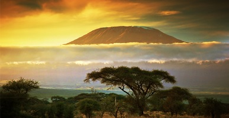
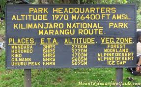
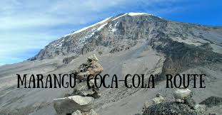
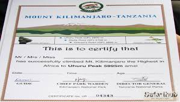
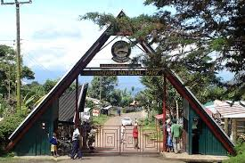

A STAFF TRIP TO MOUNT KILIMANJARO
Mlima wa Kilimanjaro uliopo nchini Tanzania ni kivutio kikubwa kwa watalii wa ndani na nje ya nchi. Safari ya kufikia kilele cha mlima huo mara nyingi inachukua muda wa siku tano hadi wiki moja, hii ni kutokana na mabadiliko ya hali ya hewa pindi watalii wanapokuwa safarini. Kutokana na ugumu wa safari hiyo, watalii pindi wanarudi salama kutoka kilele, hupokewa kwa shamra shamra na kupongezwa.hizi nibaadhi yapicha ambazo zilichukuliwa watumishi wakiwa katika safari hiyo


